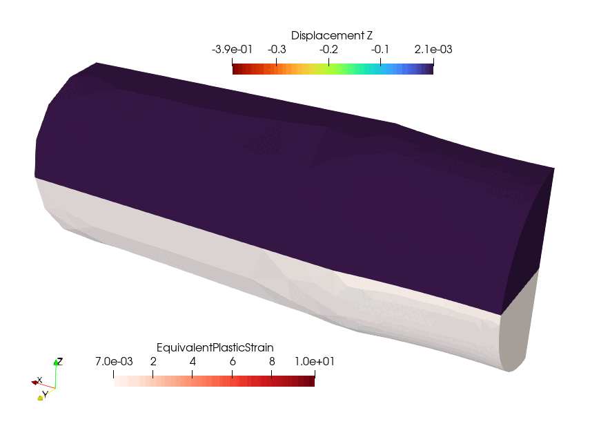

Finite-strain \(\boldsymbol{F}^\text{e}\boldsymbol{F}^\text{p}\) plasticity#
\(\newcommand{\bF}{\boldsymbol{F}}\newcommand{\bFe}{\boldsymbol{F}^\text{e}}\newcommand{\bFp}{\boldsymbol{F}^\text{p}} \newcommand{\bs}{\boldsymbol{s}} \newcommand{\btau}{\boldsymbol{\tau}} \newcommand{\bI}{\boldsymbol{I}} \newcommand{\bP}{\boldsymbol{P}} \newcommand{\bbe}{\boldsymbol{b}^\text{e}} \newcommand{\bbebar}{\overline{\boldsymbol{b}}^\text{e}} \newcommand{\dev}{\operatorname{dev}} \newcommand{\det}{\operatorname{det}} \) In this example, we show how to use a JAX implementation of finite-strain plasticity using the \(\bFe\bFp\) formalism.
{kind=link}
Tip
This demo also works in parallel.
Problem setup#
The setup of the FEniCSx variational problem is quite similar to the MFront Hyperelastic heterogeneous material demo.
import numpy as np
from mpi4py import MPI
import gmsh
import ufl
from petsc4py import PETSc
from dolfinx import fem, io
from dolfinx.cpp.nls.petsc import NewtonSolver
from dolfinx_materials.quadrature_map import QuadratureMap
from dolfinx_materials.jax_materials import LinearElasticIsotropic, FeFpJ2Plasticity
import jax.numpy as jnp
from dolfinx_materials.solvers import NonlinearMaterialProblem
from dolfinx_materials.utils import nonsymmetric_tensor_to_vector
comm = MPI.COMM_WORLD
rank = comm.rank
dim = 3
L = 10.0 # rod half-length
W = 2.0 # rod diameter
R = 20.0 # notch radius
d = 0.2 # cross-section reduction
coarse_size = 1.0
fine_size = 0.2
An NVIDIA GPU may be present on this machine, but a CUDA-enabled jaxlib is not installed. Falling back to cpu.
The mesh consists of a quarter of cylindrical rod with a slightly reduced cross-section at its center to induce necking. The geometry is defined with gmsh API and the Open-Cascade kernel.
Show code cell source
gmsh.initialize()
gmsh.option.setNumber("General.Terminal", 0) # to disable meshing info
if rank == 0:
rectangle = gmsh.model.occ.addRectangle(0, 0, 0, L, W)
tool = gmsh.model.occ.addDisk(0, W - d + R, 0, R, R)
vol_dimTag = (dim - 1, rectangle)
out = gmsh.model.occ.cut([vol_dimTag], [(dim - 1, tool)])
out = gmsh.model.occ.revolve(out[0], 0, 0, 0, 1, 0, 0, np.pi / 2)
gmsh.model.occ.synchronize()
gmsh.model.addPhysicalGroup(dim, [1], 1, name="Matrix")
gmsh.model.addPhysicalGroup(dim - 1, [2], 1, name="bottom")
gmsh.model.addPhysicalGroup(dim - 1, [6], 2, name="side_Y")
gmsh.model.addPhysicalGroup(dim - 1, [1], 3, name="side_Z")
gmsh.model.addPhysicalGroup(dim - 1, [5], 4, name="top")
field_tag = gmsh.model.mesh.field.add("Box")
gmsh.model.mesh.field.setNumber(field_tag, "VIn", fine_size)
gmsh.model.mesh.field.setNumber(field_tag, "VOut", coarse_size)
gmsh.model.mesh.field.setNumber(field_tag, "XMin", -W)
gmsh.model.mesh.field.setNumber(field_tag, "XMax", W)
gmsh.model.mesh.field.setNumber(field_tag, "YMin", 0)
gmsh.model.mesh.field.setNumber(field_tag, "YMax", W)
gmsh.model.mesh.field.setNumber(field_tag, "ZMin", 0)
gmsh.model.mesh.field.setNumber(field_tag, "ZMax", W)
gmsh.model.mesh.field.setNumber(field_tag, "Thickness", W)
gmsh.model.mesh.field.setAsBackgroundMesh(field_tag)
gmsh.model.mesh.generate(dim)
domain, subdomains, facets = io.gmshio.model_to_mesh(gmsh.model, comm, 0)
gmsh.finalize()
Horizontal traction with free transverse displacement is imposed at the rod extremities, symmetry boundary conditions are enforced on other plane surfaces.
fdim = dim - 1
domain.topology.create_connectivity(fdim, dim)
order = 2
V = fem.functionspace(domain, ("P", order, (dim,)))
deg_quad = 2 * (order- 1)
V_x, _ = V.sub(0).collapse()
V_y, _ = V.sub(1).collapse()
V_z, _ = V.sub(2).collapse()
bottom_x_dofs = fem.locate_dofs_topological((V.sub(0), V_x), fdim, facets.find(1))
top_x_dofs = fem.locate_dofs_topological((V.sub(0), V_x), fdim, facets.find(4))
side_y_dofs = fem.locate_dofs_topological((V.sub(1), V_y), fdim, facets.find(2))
side_z_dofs = fem.locate_dofs_topological((V.sub(2), V_z), fdim, facets.find(3))
u0_x = fem.Function(V_x)
u0_y = fem.Function(V_y)
u0_z = fem.Function(V_z)
uD_x = fem.Function(V_x)
bcs = [
fem.dirichletbc(u0_y, bottom_x_dofs, V.sub(0)),
fem.dirichletbc(u0_y, side_y_dofs, V.sub(1)),
fem.dirichletbc(u0_z, side_z_dofs, V.sub(2)),
fem.dirichletbc(uD_x, top_x_dofs, V.sub(0))
]
As in the MFront hyperelastic demo, the nonlinear residual based on PK1 stress is used. The JAX FeFpJ2Plasticity is defined based on an elastic material and a user-defined yield stress function.
Id = ufl.Identity(dim)
def F(u):
return nonsymmetric_tensor_to_vector(Id + ufl.grad(u))
def dF(u, v):
return ufl.derivative(F(u), u, v)
du = ufl.TrialFunction(V)
v = ufl.TestFunction(V)
u = fem.Function(V, name="Displacement")
E = 70e3
nu = 0.3
sig0 = 500.0
b = 1e3
sigu = 750.0
def yield_stress(p):
return sig0 + (sigu - sig0) * (1 - jnp.exp(-b * p))
elastic_model = LinearElasticIsotropic(E, nu)
material = FeFpJ2Plasticity(elastic_model, yield_stress)
qmap = QuadratureMap(domain, deg_quad, material)
qmap.register_gradient("F", F(u))
P = qmap.fluxes["PK1"]
Res = ufl.dot(P, dF(u, v)) * qmap.dx
Jac = qmap.derivative(Res, u, du)
Material model#
We briefly describe the equations of the FeFpJ2Plasticity model. More details can be found in [Seidl and Granzow, 2022].
Evolution equations#
As stated before, the model is based on a \(\bFe\bFp\) split of the total deformation gradient \(\bF\). The plastic deformation is assumed to be isochoric so that \(J=\det\bF=\det\bFe\). The elastic response is assumed to be hyperelastic and is expressed in terms of the Kirchhoff stress \(\btau\) and its deviatoric part \(\bs=\dev(\btau)\) as follows:
where \(\bbebar = J^{-2/3}\bbe\) with \(\bbe=\bFe{\bFe}^\text{T}\) being the elastic left Cauchy-Green strain tensor.
For the plastic part, we assume a von Mises-type J2 plasticity with the following yield function:
where \(p\) is the cumulated plastic strain and \(R(p)\) a user-defined yield stress.
The evolution of \(p\) is given by the associated plastic flow rule given by:
where \(\mathcal{L}_v(\bbe)\) is the Lie derivative of the elastic strain. The isotropic part evolution being given by the isochoric plastic condition \(\det(\bbe)=J^2\).
Discrete evolutions equations#
Discretization of the above evolution equations follows a procedure similar to the integration of small-strain elastoplastic models as described in JAX implementation of elastoplasticity.
In our implementation, internal state variables are the cumulated plastic strain \(p\) and the volume preserving elastic strain \(\bbebar\).
We first compute an elastic stress predictor based on the relative deformation gradient given by:
where \(\bF_n\) is the previous deformation gradient and \(\bF_{n+1}\) the current one.
Assuming an elastic evolution at first, the trial elastic strain is given by:
which is used to compute the elastic trial deviatoric stress \(\bs_\text{trial} = \mu\dev(\bbebar_\text{trial})\).
The yield condition is then evaluated for this trial state \(f_\text{trial} = \|\bs_\text{trial}\| - \sqrt{\dfrac{2}{3}}R(p_n)\).
For an elastic evolution, \(f_\text{trial} \leq 0\) we set \(\bbebar = \bbebar_\text{trial}\) and \(\Delta p =0\). For a plastic evolution \(f_\text{trial} > 0\), we write the following disrete evolution equations, see again [Seidl and Granzow, 2022] for more details.
Note that the first part of \(r_{\bbe}\) is deviatoric only and enforce the plastic flow rule whereas the last term is purely spherical and enforces the plastic incompressibility condition. This nonlinear Newton system is solved using the JAXNewtonSolver for \(\Delta p\) and \(\bbebar\).
Finally, the first Piola-Kirchhoff stress is obtained from the Kirchhoff stress as follows:
The tangent operator is again computed using AD which avoids us to compute explicitly the consistent tangent operator which is particularly nasty for such \(\bFe\bFp\) models.
Finally, the internal state variable \(\overline{\boldsymbol{b}}^\text{e}\) describing the intermediate elastic configuration must be initialized with the identity tensor to specify a natural unstressed elastic configuration. We use a first call to the material update function to enforce compilation of the JAX behavior.
qmap.initialize_state()
qmap.update_initial_state("be_bar", fem.Constant(domain, (1.0, 1.0, 1.0, 0, 0, 0)))
qmap.update()
Resolution#
As in the MFront demo, we define the custom nonlinear problem, the corresponding Newton solver, the PETSc Krylov solver and its Geometric Algebraic MultiGrid preconditioner.
problem = NonlinearMaterialProblem(qmap, Res, Jac, u, bcs)
newton = NewtonSolver(comm)
newton.rtol = 1e-8
newton.atol = 1e-8
newton.convergence_criterion = "residual"
# Set solver options
ksp = newton.krylov_solver
opts = PETSc.Options()
option_prefix = ksp.getOptionsPrefix()
opts[f"{option_prefix}ksp_type"] = "gmres"
opts[f"{option_prefix}ksp_rtol"] = 1e-8
opts[f"{option_prefix}pc_type"] = "gamg"
ksp.setFromOptions()
We loop over an imposed increasing horizontal strain and solve the nonlinear problem. We output the displacement and equivalent plastic strain variables. Finally, we measure the time spent by each rank on the constitutive update and the linear solve and print the average values on rank 0.
from dolfinx.common import timing
file_results = io.VTKFile(
domain.comm,
f"results/{material.name}.pvd",
"w",
)
N = 40
Exx = np.linspace(0, 30e-3, N + 1)
for i, exx in enumerate(Exx[1:]):
uD_x.vector.set(exx * L)
converged, it = problem.solve(newton)
p = qmap.project_on("p", ("DG", 0))
p.name = "EquivalentPlasticStrain"
file_results.write_function(u, i + 1)
file_results.write_function(p, i + 1)
constitutive_update_time = timing("Constitutive update")[2]
linear_solve_time = timing("PETSc Krylov solver")[2]
# Gather all times on rank 0
all_times = None
if rank == 0:
all_times = np.zeros((comm.size, 2))
comm.Gather(np.array([constitutive_update_time, linear_solve_time]), all_times, root=0)
# Compute the average time on rank 0
if rank == 0:
average_time = np.mean(all_times, axis=0)
print(f"Increment {i}\nAverage time for constitutive update {average_time[0]:.2f}s")
print(f"Average time for global linear solver {average_time[1]:.2f}s\n")
file_results.close()
Show code cell output
Solution reached in 2 iterations.
Increment 0
Average time for constitutive update 0.60s
Average time for global linear solver 0.54s
Solution reached in 2 iterations.
Increment 1
Average time for constitutive update 1.25s
Average time for global linear solver 1.09s
Solution reached in 2 iterations.
Increment 2
Average time for constitutive update 1.85s
Average time for global linear solver 1.64s
Solution reached in 4 iterations.
Increment 3
Average time for constitutive update 3.40s
Average time for global linear solver 2.62s
Solution reached in 4 iterations.
Increment 4
Average time for constitutive update 5.16s
Average time for global linear solver 3.64s
Solution reached in 5 iterations.
Increment 5
Average time for constitutive update 7.35s
Average time for global linear solver 5.89s
Solution reached in 5 iterations.
Increment 6
Average time for constitutive update 9.28s
Average time for global linear solver 8.38s
Solution reached in 4 iterations.
Increment 7
Average time for constitutive update 10.92s
Average time for global linear solver 10.60s
Solution reached in 4 iterations.
Increment 8
Average time for constitutive update 12.57s
Average time for global linear solver 12.81s
Solution reached in 4 iterations.
Increment 9
Average time for constitutive update 14.22s
Average time for global linear solver 15.04s
Solution reached in 6 iterations.
Increment 10
Average time for constitutive update 16.55s
Average time for global linear solver 18.58s
Solution reached in 4 iterations.
Increment 11
Average time for constitutive update 18.34s
Average time for global linear solver 21.27s
Solution reached in 4 iterations.
Increment 12
Average time for constitutive update 20.14s
Average time for global linear solver 24.14s
Solution reached in 4 iterations.
Increment 13
Average time for constitutive update 21.87s
Average time for global linear solver 26.92s
Solution reached in 4 iterations.
Increment 14
Average time for constitutive update 23.68s
Average time for global linear solver 29.79s
Solution reached in 4 iterations.
Increment 15
Average time for constitutive update 25.54s
Average time for global linear solver 32.88s
Solution reached in 4 iterations.
Increment 16
Average time for constitutive update 27.35s
Average time for global linear solver 35.85s
Solution reached in 4 iterations.
Increment 17
Average time for constitutive update 29.17s
Average time for global linear solver 38.86s
Solution reached in 4 iterations.
Increment 18
Average time for constitutive update 30.99s
Average time for global linear solver 41.69s
Solution reached in 4 iterations.
Increment 19
Average time for constitutive update 32.77s
Average time for global linear solver 44.55s
Solution reached in 4 iterations.
Increment 20
Average time for constitutive update 34.61s
Average time for global linear solver 47.61s
Solution reached in 4 iterations.
Increment 21
Average time for constitutive update 36.45s
Average time for global linear solver 50.72s
Solution reached in 6 iterations.
Increment 22
Average time for constitutive update 39.01s
Average time for global linear solver 55.57s
Solution reached in 4 iterations.
Increment 23
Average time for constitutive update 40.84s
Average time for global linear solver 59.19s
Solution reached in 4 iterations.
Increment 24
Average time for constitutive update 42.69s
Average time for global linear solver 62.65s
Solution reached in 4 iterations.
Increment 25
Average time for constitutive update 44.51s
Average time for global linear solver 66.17s
Solution reached in 4 iterations.
Increment 26
Average time for constitutive update 46.33s
Average time for global linear solver 69.61s
Solution reached in 4 iterations.
Increment 27
Average time for constitutive update 48.15s
Average time for global linear solver 73.13s
Solution reached in 4 iterations.
Increment 28
Average time for constitutive update 49.93s
Average time for global linear solver 76.69s
Solution reached in 4 iterations.
Increment 29
Average time for constitutive update 51.78s
Average time for global linear solver 80.29s
Solution reached in 4 iterations.
Increment 30
Average time for constitutive update 53.74s
Average time for global linear solver 84.21s
Solution reached in 4 iterations.
Increment 31
Average time for constitutive update 55.73s
Average time for global linear solver 88.32s
Solution reached in 4 iterations.
Increment 32
Average time for constitutive update 57.72s
Average time for global linear solver 92.91s
Solution reached in 5 iterations.
Increment 33
Average time for constitutive update 60.06s
Average time for global linear solver 99.16s
Solution reached in 5 iterations.
Increment 34
Average time for constitutive update 62.51s
Average time for global linear solver 106.41s
Solution reached in 5 iterations.
Increment 35
Average time for constitutive update 64.92s
Average time for global linear solver 115.56s
Solution reached in 5 iterations.
Increment 36
Average time for constitutive update 67.45s
Average time for global linear solver 125.52s
Solution reached in 5 iterations.
Increment 37
Average time for constitutive update 70.28s
Average time for global linear solver 148.41s
Solution reached in 6 iterations.
Increment 38
Average time for constitutive update 73.68s
Average time for global linear solver 214.22s
Solution reached in 9 iterations.
Increment 39
Average time for constitutive update 78.97s
Average time for global linear solver 281.85s
We observe that the Newton method converges within a few iterations in general meaning that the tangent operator is propely computed.